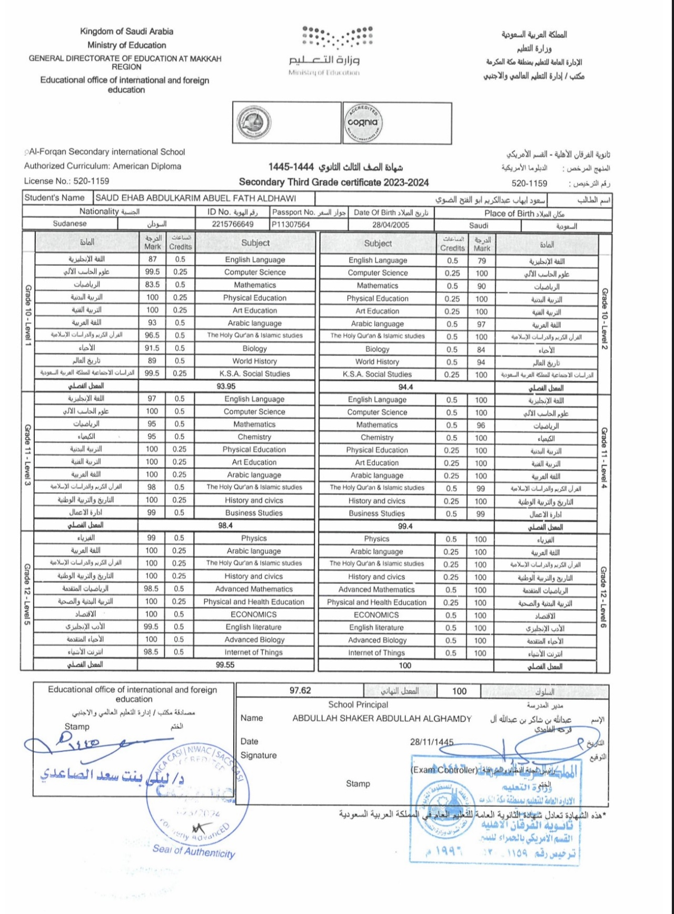

Hi, I’m a Mechatronics Engineering student at Asia Pacific University of Technology & Innovation, passionate about robotics, automation, electronics, and programming. I enjoy solving engineering problems, taking on new challenges, and continuously improving my technical and professional skills. I am always eager to learn new technologies and work on innovative projects that help me grow as an engineer.
My coursework and personal projects combine electrical engineering concepts, such as circuit analysis and system design, with computer science and programming. Whether working on parallel RLC circuit calculations or developing custom web templates, I focus on precision, efficiency, and problem-solving.
On the software side, I specialize in low-level programming and logical system operations while continuously expanding my skills in modern web development to create responsive and user-friendly applications.
Beyond engineering and technology, I enjoy exploring a wide range of subjects both intellectually and creatively. I have studied philosophy and psychology, and I enjoy writing stories and poetry as a way to express ideas and creativity.
Music is also an important part of my life — I play the piano, create my own compositions, and enjoy drawing as a creative outlet. On the physical side, I enjoy archery and learning skills such as sword fighting, both of which require focus, discipline, and precision.
Having lived in the UAE and Saudi Arabia while studying in Malaysia has given me a broader perspective and helped me adapt to different cultures and environments.

Issued by Al Forqan International Schools
Skill description goes here.